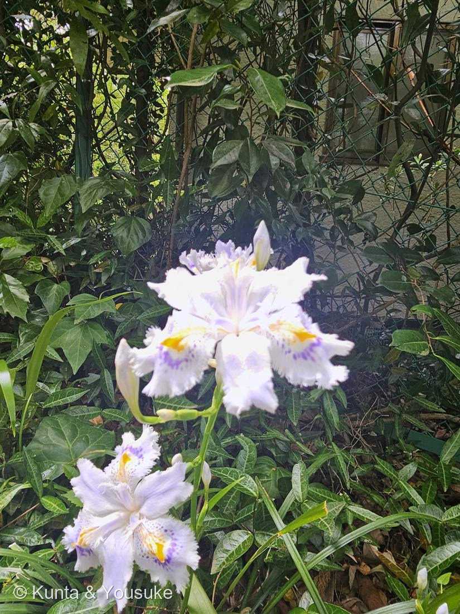

シャガ（射干・著莪）
Iris japonica Thunb.
別名 · 胡蝶花（こちょうか・中国名）／著莪 ／ 原産は中国（史前帰化）
アヤメ科 · Iridaceae（アヤメ属）── この図鑑で初めての科
燻太さんの言葉「自分が大好きな花。木陰の湿っている場所で、綺麗な模様のドレスを纏ってる」……その“ドレス”のヒラヒラには、めしべの化けたものも混じっている。そして、この花は種を残せない。
見分けたところ ── 模様のドレス
- 木陰の湿ったところの常緑の草。剣のような細長い葉（写真の下や右の、すっと立った緑）。
- 白地に、青紫の斑点と、中心のオレンジ色の“とさか”。花被のふちが、こまかく糸のように裂けてフリルになる（＝燻太さんの言う「模様のドレス」）。中国名胡蝶花＝蝶の花も、この翅のようなフリルから。
- ⚠一日花＝ひとつの花は朝ひらいて夕方しぼむ（028 ムラサキツユクサ・039 スイフヨウと同じ）。でも次々に咲くので、株は長く咲きつづける。
- Iris＝ギリシャ語で「虹」＝虹の女神イリス。「射干（しゃかん）」はもともとヒオウギの漢名で、それがこの花に借りられて「シャガ」になった（→ おまけのヒオウギが、名の“もとの持ち主”）。
⭐⭐⭐ いちばんのなぞ ── 「種ができないクローン」
- ⭐日本のシャガは、染色体を3セット持つ「三倍体」。奇数セットだと減数分裂がうまく割り切れず、種子ができない。
- ⭐⭐だからシャガは、種でふえない。ぜんぶ地下茎（走出枝）を伸ばしてふえた“クローン”＝日本じゅうのシャガが、遺伝的にほぼ同じ、一つの株の分身。
- ⭐⭐⭐種を作れない＝大昔に中国から“生きた株そのもの”を人が運んできた、ということ（史前帰化植物）。この木陰の群れも、その最初の一株から、根で広がった長い長い分身。（※染色体数は報告に幅があるが、日本産が三倍体で不稔・栄養繁殖なのは一致）
- ⭐044 ペンタスと同じ「種のできない花」：ペンタスは同じ型どうしで実らない＋人が挿し木で増やすクローンだった。シャガは“三倍体で種そのものが作れない”クローン——ちがう理由で、同じ「種なしで広がる暮らし」にたどりついた。しかもシャガは、地下茎で自分の力で広がる（033 ミント・043 イチゴの走出枝と同じ手）。
⭐ 花びらに見えて、じつは「めしべ」── 見た目と正体がちがう
- アヤメの仲間の花は、ヒラヒラがいっぱいに見えるけれど、正体は3種類：
- 外花被片（そとの大きな垂れ弁）3枚＝ここにとさかと斑点がある（もとは萼にあたる）。
- 内花被片（うちの弁）3枚＝やや小さく、ふちが裂ける。
- ⭐⭐花柱枝（かちゅうし）3枚＝めしべ（花柱）が、幅広く花びらのように化けたもの。垂れ弁の上にアーチを作り、先が2つに裂ける。ヒラヒラの一部は、じつは“めしべ”。
- → 🎭「見た目と正体がちがう」の小道へ（萼・苞・葉に続いて、こんどはめしべが花びらに化けるという、新しい“化け方”）。
⭐ とさかと斑点は、ハチへの案内板 ── だれを呼ぶための花か
- 中央のオレンジのとさか＋青紫の斑点＝蜜標（みつじるし）。ハチはそこに降り、垂れ弁と花柱枝が作るトンネルの奥へ潜る。奥へ進むあいだに先にめしべ（柱頭）、次におしべ（葯）をこすっていく＝アヤメの花は「1輪の中に、3つの受粉の小部屋」を持つ精巧なしくみ。
- → 🦋「だれを呼ぶための花か」の小道へ。⚠でもシャガは種ができない。律儀に蜜標を掲げてハチを呼ぶのに、その先に実りはない——呼びかけだけが残った、静かな花（052 オリーブが「だれも呼ばない花」だったのと、ちょうど裏返し）。